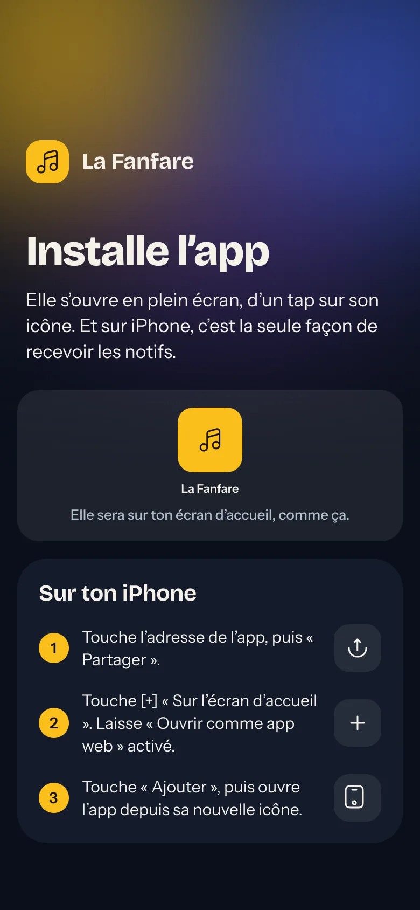

Installer l'app
Pas de store : l'app s'installe depuis le navigateur, en deux minutes.
- 1Tu reçois un lien d'invitationPar e-mail. Il marche une fois, pendant 7 jours. Il ouvre une fiche pré-remplie : tu vérifies, tu complètes, tu choisis ton mot de passe.
- 2Ton identifiant, c'est ton adresse e-mailMot de passe oublié : un lien par e-mail, ou demande à un admin.
- 3Installe l'app sur ton téléphoneIl y a un guide dans l'app qui t'explique comment faire. Le guide s'affiche à l'accueil et reste disponible dans les réglages.
- 4Sur iPhone, c'est obligatoire pour les notifsLes notifications n'arrivent que si l'app est installée et ouverte depuis son icône.
- 5Tu restes connectéPas besoin de te reconnecter à chaque fois. Tu peux déconnecter tous tes appareils d'un coup, depuis les réglages.
